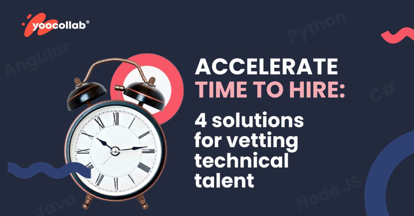

Accelerate Time to Hire: 4 Solutions for Vetting Technical Talent
May 30, 2022 — 4 min read
Finding and vetting top technical talent can be challenging for professionals in the tech industry. However, accelerating the hiring process improves your chances of being successful.
There are several ways of vetting technical talent, each with its pros and cons. In this blog post, I share four solutions for finding the right candidate on behalf of an outsourcing company that fits your company's needs.
The challenges of modern IT hiring
In today's digital economy, technology is a crucial factor for companies. With that in mind, it is no surprise that hiring the best technical talent has become a priority for most organizations. But despite the importance of IT hiring, many organizations struggle to find and hire top-notch IT talent. While the demand for skilled technologists is growing, the number of qualified candidates is not increasing at the same rate.
This skills gap makes it difficult for employers to fill open positions quickly and efficiently. As a result, the HR department of the IT industry is facing some of the biggest challenges in IT recruitment to nurture, recruit and retain talents.
- Finding the qualified talents
- Building employer brand for a better impression
- Aligning with the hiring manager's demands/job requirements
- Recruiting within tight time frames
- Creating an efficient recruiting process
- Nurturing inactive candidates
- Maintaining a low turnover rate
How can you make your hiring process faster?
Finding great talent often means finding the right mix of experience, education, and technical skills to support your business needs.
For a growing number of companies, it also means vetting the candidates’ coding abilities.
To accelerate the time to hire, companies must incorporate technical tests into their hiring processes without sacrificing quality or adding too much time for candidates or recruiters.
Here are four solutions for vetting technical talent faster and efficiently.